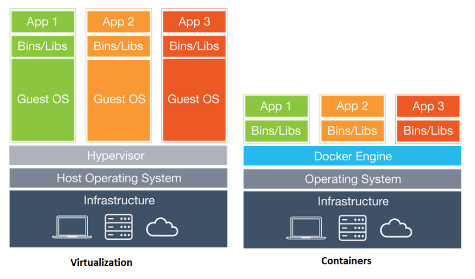

| Module 0 | Module 1 | Module 2 | Module 3 |
|---|
Introduction
I figured I’d start off my first post on a topic I am deeply passionate about : Docker containers! In this tutorial, we are going to gain hands on experience and learn the basics docker containers are (how to run them, configure them, and consume them), docker images (how to use them and how to build them), docker commands, and finally learn how to automate the deployment of a simple ‘containerized environment’ with multiple ‘services’.
The end result will be a self contained dockerized sandbox environment / IDE to develop scripts and to issue them via NITRO REST API commands to your NetScaler ADCs. This is just one of many use cases to showcase container ‘orchestration’ to a desired state via simple YAML files. But before we begin, we need a brief introduction on ‘containers’ and how Docker works under the hood. This introduction is meant to be short intentionally because the point of the tutorial below is more focused on getting “hands on experience” rather than “delving into theory”.
Tutorial Contents
- Module 0: Install Docker Locally
- Module 1: Introduction to Docker Images and Containers
- Exercise 1: Pulling Docker Images
- Exercise 2: Running a Docker Container
- Module 2: Introduction to Docker Files
- Dockerfiles
- Exercise 1: Write a Dockerfile
- Exercise 2: Run another Docker Container
- Module 3: Introduction to Docker Compose
- Exercise 1: Create a
docker-compose.yamlfile - Exercise 2: Compose an Environment
- Exercise 1: Create a
Brief Technology Overview
Source of the content below comes from an article published in InfoWold
Docker containers are self-contained execution environments—with their own, isolated CPU, memory, block I/O, and network resources—that share the kernel of the host operating system. The result is something that feels like a virtual machine, but sheds all the weight and startup overhead of a guest operating system.
To understand containers, we have to start with Linux cgroups and namespaces, the Linux kernel features that create the walls between containers and other processes running on the host. Linux namespaces, originally developed by IBM, wrap a set of system resources and present them to a process to make it look like they are dedicated to that process.
In short:
- Namespaces : Limits what the running process can see. I.E. processes can have their own view of the system’s resources.
- cgroups : Metering and limiting mechanism, they control how much of a system resource (CPU, memory) processes can use.
In comparison to virtual machines, containers feel and act like independent operating system environments, but are actually layered on top of an existing OS similar to how a VM would be on top of a hypervisor. A visual below is provided for contextual aid in comparison with traditional VM architecture vs a docker containerized architecture.
Pre-requisites
- Install Docker
- You must install Docker in your local environment to do this tutorial. Follow the instructions in the link provided to install Docker on your operating system.
Note: You can also find this tutorial directly on GitHub where I’ve posted an older version of this lab here within the “Docker-101” repository of the @Citrix-TechSpecialist organization.